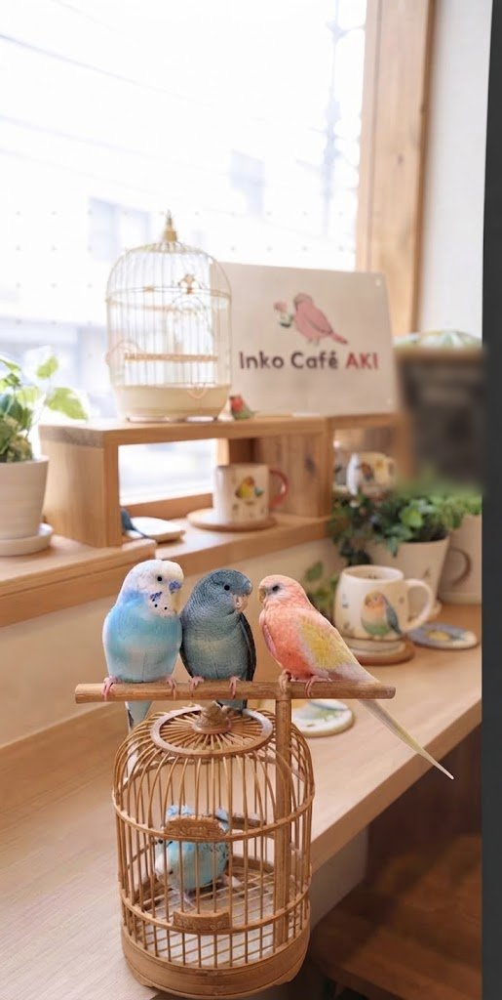
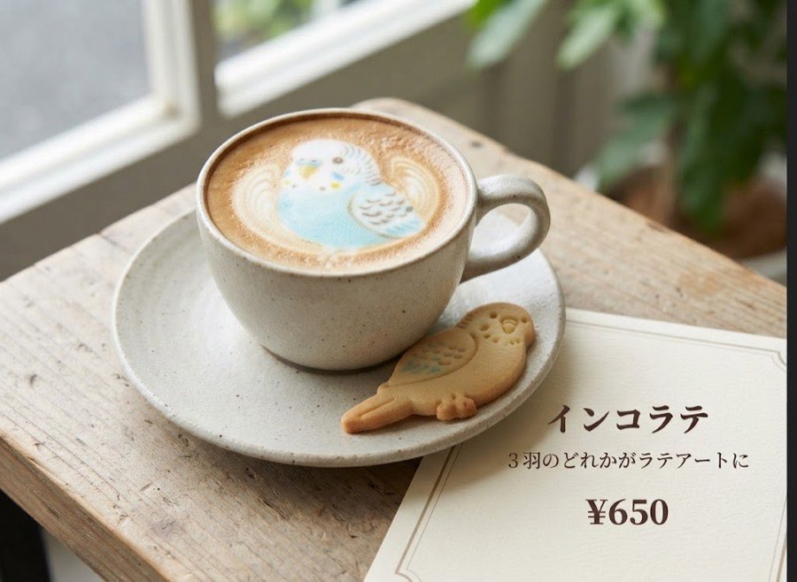
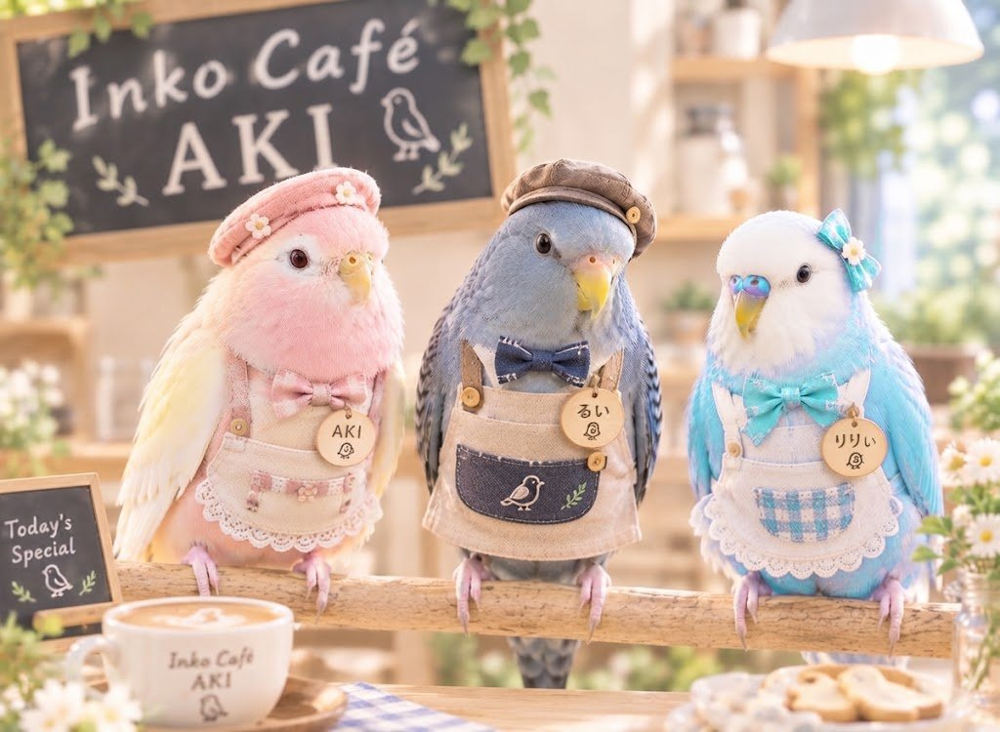
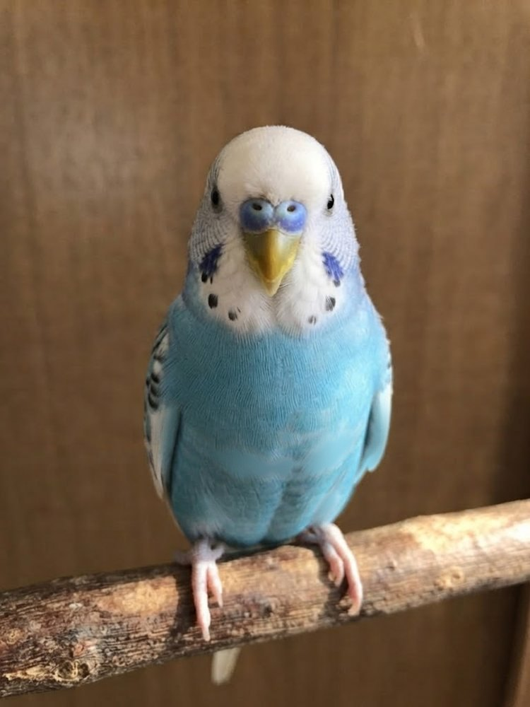
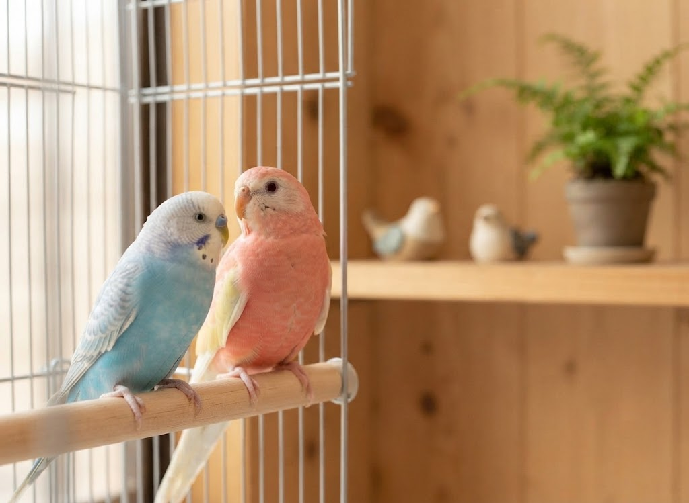
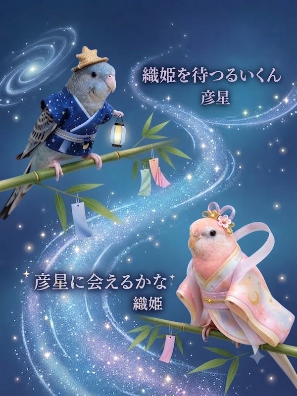
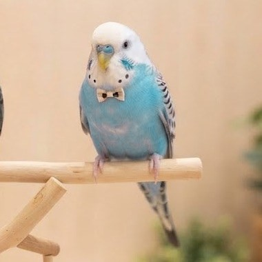
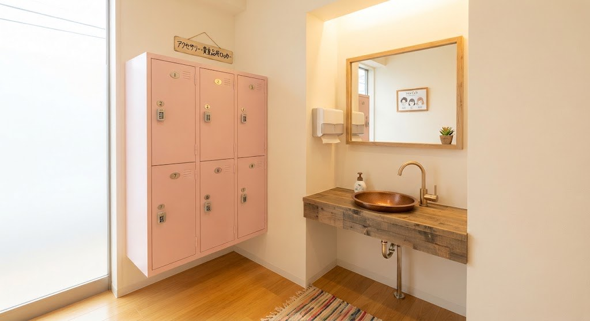
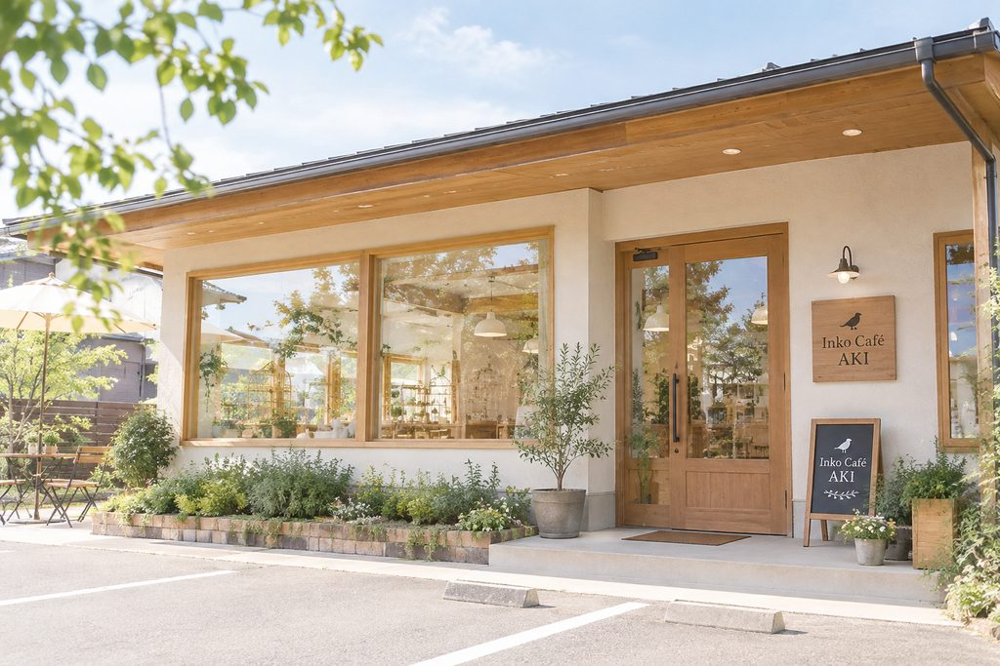

店長
店長
アキクサインコ（ルビノー）・7歳
AKIあき
のんびりマイペースな
ピンクのお姫さま
- せいかく
- おっとり
平和主義 - すきなこと
- お昼寝・おやつ
- チャーム
- いちごミルク色の
羽


ちいさな体に、ふわふわの羽。
首をかしげたり、うとうとお昼寝したり。
インコたちのペースに合わせて、
いっしょにのんびりしてみませんか？
インコ好きさんも、はじめましての人も大歓迎です。
10/16（金）はインコたちの健康診断のため、臨時休業します。

看板インコの3羽と、スタッフインコのぷりん・もも・ラムネ・レモンがお待ちしています。
「ごあいさつを聞く」を押すと、しゃべってくれるよ
店長
アキクサインコ（ルビノー）・7歳
のんびりマイペースな
ピンクのお姫さま
 新人さん
新人さん
サザナミインコ・0歳
さざ波もようがおしゃれな
ゆったりボーイ

副店長セキセイインコ・8歳
いつもせかせか
ごきげんなお兄ちゃん
 スタッフ
スタッフ
オカメインコ（ノーマル）・3歳
とさかで気持ちを伝える
歌うま男子
 スタッフ
スタッフ
コザクラインコ（ノーマル）・2歳
ピーチ色のお顔の
元気いっぱいガール
 スタッフ
スタッフ
マメルリハ・2羽とも1歳
いつもいっしょの
なかよしコンビ

Story 01
りりぃはせかせかよく動いて、いつもごきげんさん。AKIはのんびりマイペース。
りりぃが1歳年上のお兄ちゃん。ふたり並んでいるだけで、お部屋がふんわり明るくなります。

Story 02
彦星はるいくん、織姫はAKI。
天の川をはさんで「会えるかな？」
とってもかわいいでしょ？
お店にいる6種類のインコのこと、ちょっと知ってからくるともっとたのしい！
争いがきらいな、おだやか平和主義者。
オーストラリア生まれの中型インコです。
全身の“さざ波”もようが名前の由来。
南米の森で暮らす、温厚な小型インコです。

青や黄色のカラフルな羽がトレードマーク。
人なつっこくて、おしゃべり上手。
ぴょこんと立った冠羽（とさか）と、オレンジのほっぺがトレードマーク。
おだやかで人なつっこい、オウムのなかまです。
桜色（ピーチ色）のお顔が名前の由来。
英語では「ラブバード」と呼ばれる、愛情深い小型インコです。

手のひらにすっぽりおさまる、日本でいちばん小さいくらいのインコ。
名前は「豆」のように小さくて、「瑠璃（るり）色の羽」をもつことから。小さな体でよく動く、好奇心いっぱいのインコです。
写真をタップすると大きく見られるよ
インコたちはとっても繊細。みんなで守って、なかよくなろうね。


Follow us on Instagram
7歳のアキクサインコと、まだ1歳になっていないサザナミインコ。
マイペースで元気いっぱいな日常を更新中です。
ご予約はInstagramのDMで受け付けています。
空いていれば予約なしでも入れます。
プランやメニューは、当日お店で決めてもOK。撮影会に参加したいときだけ、予約時に教えてね。
下の文面をコピーして、InstagramのDMに貼りつけて送ってください。
1日以内にお返事します。お店の詳しい場所もこのときにお知らせします。
DMの文面（コピーして使えます）
【予約希望】 お名前： 希望日時： 月 日（ ） ： 〜 人数： 名 撮影会：（参加する／しない） ランチ：（予約する／しない） ※プランやメニューは当日決めます
大丈夫です！はじめにスタッフが、インコとの接し方をお伝えします。見ているだけでも楽しめます。
持ち物は特にありません。アクセサリー（ピアス・ネックレス・指輪・時計など）は、インコがかじると金属中毒の原因になるので、入室前に外してロッカーへ入れてください。フンがつくこともあるので、汚れてもいい服がおすすめです。
現金・クレジットカード・交通系IC・QRコード決済（PayPayなど）が使えます。
羽や脂粉（羽の粉）が舞うことがあります。アレルギーのある方は、ご来店をお控えいただくか、医師に相談してからお越しください。
もちろんです！おひとりさまも多く来てくれています。インコたちとゆっくり過ごしてね。
| 月・木・金 | 12:00〜18:00 |
|---|---|
| 土・日・祝 | 11:00〜18:00 |
| 火・水 | 定休日 |
